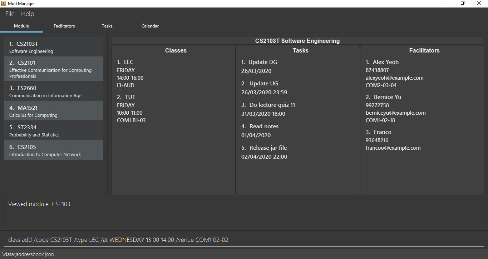
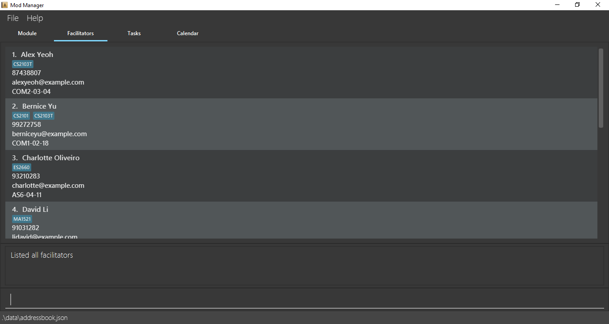
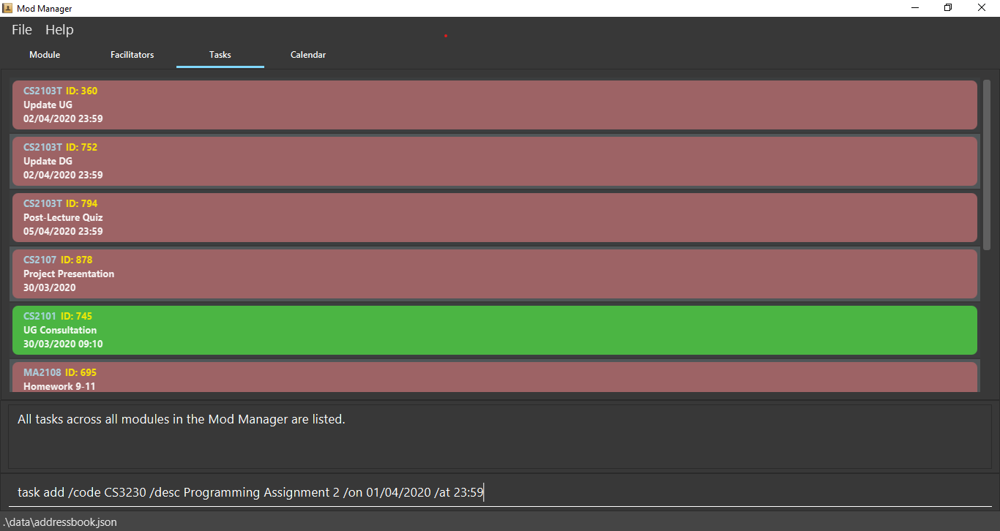
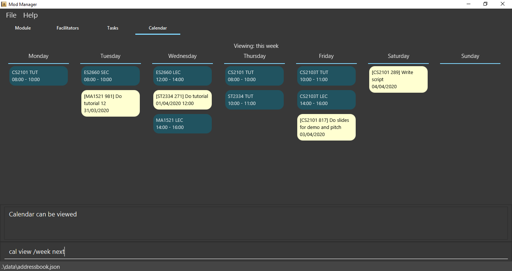

By: Team AY1920S2-CS2103T-F10-4 Since: Jan 2020 Licence: MIT
- 1. Introduction
- 2. Quick Start
- 3. Features
- 3.1. Viewing help :
help - 3.2. Managing modules :
mod - 3.3. Managing classes :
class - 3.4. Managing tasks :
task - 3.5. Managing facilitators :
facil - 3.6. Managing calendar :
cal - 3.7. Listing commands :
cmd - 3.8. Automatic command guidance
- 3.9. Clearing all entries :
clear - 3.10. Exiting the program :
exit - 3.11. Saving the data
- 3.12. Upcoming
[coming in v2.0]
- 3.1. Viewing help :
- 4. FAQ
- 5. Command Summary
1. Introduction
Mod Manager is for those who prefer to use a desktop app for managing tasks for modules in a semester. More importantly, Mod Manager is optimized for those who prefer to work with a Command Line Interface (CLI) while still having the benefits of a Graphical User Interface (GUI). If you can type fast, Mod Manager can get your management of tasks done faster than traditional GUI apps. Interested? Jump to the Section 2, “Quick Start” to get started. Enjoy!
2. Quick Start
2.1. Installing Mod Manager
-
Ensure you have Java
11or above installed in your Computer. -
Download the latest
modmanager.jarhere. -
Copy the file to the folder you want to use as the home folder for your Mod Manager.
-
Double-click the file to start the app. The GUI should appear in a few seconds.
Figure 1. GUI for Mod Manager -
Type the command in the command box and press Enter to execute it.
e.g. typinghelpand pressing Enter will open the help window.Here are some example commands that you can try:
-
cmd all: lists all available commands in our Mod Manager. -
mod add /code CS2103T /desc Software Engineering: adds our module CS2103T to our module list. -
facil add /name Akshay Narayan /email dcsaksh@nus.edu.sg /code CS2103T: adds our Lecturer information to the module. If you are rushing to write an e-mail to our Lecturer, you can refer to this conveniently. -
task add /code CS2103T /task Complete tP tasks: adds a task to our CS2103T module. -
task add /code CS2103T /task Improve the DG: adds another task to our CS2103T module. -
task find /upcoming: finds upcoming tasks. You should see the two tasks above right here. -
exit: exits the application.
-
-
Refer to Section 3, “Features” for details of each command.
2.2. Using Mod Manager
This section offers an overview of Mod Manager’s layout so that you can find what you need easily.
There are two main areas in Mod Manager:
-
A command box and result display box at the bottom of the screen.
-
A main viewing area that occupies most of the screen.
The command box is the area for you to enter commands. The result of each command will be shown in the result display box, immediately above the command box.
The main viewing area shows all the contents for one of the four tabs at any point in time. The four tabs are Module, Facilitators, Tasks and Calendar
-
Module tab contains information about lessons, tasks and facilitators for a particular module. It also shows the list of modules you currently have.
Figure 3. Module tab -
Facilitators tab contains information about all the facilitators you currently have.
Figure 4. Facilitators tab -
Tasks tab contains information about all the tasks you currently have.
Figure 5. Tasks tab -
Calendar tab shows tasks and lessons in a week.
Figure 6. Calendar tab
3. Features
Command Format
-
Words in
UPPER_CASEare the parameters to be supplied by the user. -
Items in square brackets are optional. Items in curly brackets are mutually exclusive.
-
Items with
… after them can be used multiple times including zero times. -
Parameters can be in any order.
-
Module codes are case-insensitive.
3.1. Viewing help : help
Opens up the help window that displays a link to the user guide.
Format: help
3.2. Managing modules : mod
3.2.1. Adding a module
Adds a module to the module list.
Format: mod add /code MOD_CODE [/desc DESCRIPTION]
Parameter constraints:
Example: mod add /code CS2103T /desc Software Engineering
3.2.2. Viewing all modules
Shows a list of modules.
Format: mod list
3.2.3. Viewing information of a module
Shows all classes, tasks and facilitators for a module.
Format: mod view INDEX or mod view MOD_CODE
Example: mod view 1 or mod view CS2103T
3.2.4. Editing a module
Edits the information of the module.
Format: mod edit INDEX [/code NEW_MODE_CODE] [/desc DESCRIPTION] or mod edit MOD_CODE [/code NEW_MODE_CODE] [/desc DESCRIPTION]
Parameter constraints:
Example: mod edit 1 /code cs2113t or mod edit CS2103T /desc Software Engineering
3.2.5. Deleting a module
Deletes the module, along with classes, facilitators and tasks for that module.
Format: mod delete INDEX or mod delete MOD_CODE
Parameter constraints:
Example: mod delete 2 or mod delete CS2103T
3.3. Managing classes : class
3.3.1. Adding a class
Adds a class to a module.
Format: class add /code MOD_CODE /type CLASS_TYPE /at DAY START_TIME END_TIME [/venue VENUE]
Parameter constraints:
Example: class add /code CS2103T /type LEC /at FRIDAY 14:00 16:00 /venue i3-Aud
3.3.2. Viewing all classes
Shows a list of classes.
Format: class list
3.3.3. Finding classes by day
Finds classes occurring on a particular day.
Format: class find /at DAY
Example: class find /at MONDAY
3.3.4. Finding next class
Finds the next class that will start soon.
Format: class find /next
3.3.5. Editing a class
Edits the information of the class. Class is selected by its index in the class list of a module.
Format: class edit INDEX /code MOD_CODE [/code NEW_MOD_CODE] [/type CLASS_TYPE] [/at DAY START_TIME END_TIME] [/venue VENUE]
Example: class edit 1 /code CS9000 /venue Home
3.3.6. Deleting a class
Deletes the class from the module. There are 2 ways you can delete a class.
Selects a class by its index in the full class list. You can see the full class list by using class list.
Format: class delete INDEX
Example: class delete 1
Selects a class by its index in the module’s class list.
Format: class delete /code MOD_CODE /num INDEX
Example: class delete /code CS2103T /num 1
3.4. Managing tasks : task
3.4.1. Adding a task
Adds a task to a module.
Format: task add /code MOD_CODE /desc DESCRIPTION [/on DATE] [/at TIME]
Example: task add /code CS3230 /desc Programming Assignment 2 /on 20/02/2020 /at 23:59
Parameter constraints:
3.4.2. Viewing all tasks
Shows a list of all tasks across all modules in the Mod Manager.
Format: task list
3.4.3. Finding a task by description
With this command, you can find tasks that contain any of the given keywords in their description.
Format: task find DESCRIPTION [MORE_DESCRIPTIONS]…
Parameter constraints:
3.4.4. Search tasks by date
Searches all tasks that occur on your specified date, month, or year.
Format: task search [/day DAY] [/month MONTH] [/year YEAR]
Example: task search /month 4, task search /day 10 /month 4
Parameter constraints:
3.4.5. Finding upcoming tasks
Finds upcoming tasks.
Format: task find /upcoming
3.4.6. Editing a task
Edits the information of a task.
Format: task edit /code MOD_CODE /task TASK_NAME {[/on DATE TIME] | [/at DATE TIME]}
Example: task edit /code CS2103T /task duke /on 02-03-2020 23:59
3.4.7. Deleting a task
Deletes a task from the module.
Format: task delete /code MOD_CODE /task TASK_NAME
Example: task delete /code CS2103T /task IP week 4
3.5. Managing facilitators : facil
3.5.1. Adding a facilitator
Adds a facilitator to the module.
Format: facil add /name FACILITATOR_NAME [/phone PHONE] [/email EMAIL] [/office OFFICE] /code MOD_CODE [MORE_MOD_CODES]…
or facil add /name FACILITATOR_NAME [/phone PHONE] [/email EMAIL] [/office OFFICE] /code MOD_CODE [/code MORE_MOD_CODES]…
Parameter constraints:
Example: facil add /name Akshay Narayan /phone 98765432 /email dcsaksh@nus.edu.sg /code CS2103T CS2101
or facil add /name Akshay Narayan /phone 98765432 /email dcsaksh@nus.edu.sg /code CS2103T /code CS2101
3.5.2. Viewing all facilitators
Shows a list of all facilitators sorted in alphabetical order.
Format: facil list
3.5.3. Finding a facilitator by name
Finds facilitators whose names contain the given name.
Format: facil find FACILITATOR_NAME [MORE_FACILITATOR_NAMES]…
Parameter constraints:
Example: facil find Akshay
3.5.4. Editing a facilitator
Edits the information of a facilitator.
Format: facil edit INDEX [/name FACILITATOR_NAME] [/phone PHONE] [/email EMAIL] [/office OFFICE] [/code MOD_CODE…]
or facil edit INDEX [/name FACILITATOR_NAME] [/phone PHONE] [/email EMAIL] [/office OFFICE] [/code MOD_CODE]…
Parameter constraints:
Example: facil edit 1 /name Akshay Narayan /email hisnewemail@nus.edu.sg
3.5.5. Deleting a facilitator
Deletes a facilitator from the module.
Format: facil delete INDEX
Parameter constraints:
Example: facil delete 2
3.6. Managing calendar : cal
3.6.1. Viewing calendar for current week
Shows the calender for the current week.
Format: cal view /week this
3.6.2. Viewing calendar for next week
Shows the calendar for next week.
Format: cal view /week next
3.6.3. Finding empty slots
Finds and lists empty slots from current day to end of the week of the current day.
Format: cal find empty
3.7. Listing commands : cmd
3.7.1. Listing all commands
Lists all valid commands.
Format: cmd all
3.7.2. Listing commands for a specific feature
Lists commands for a specific group.
Format: cmd group COMMAND_WORD
Example: cmd group task
3.8. Automatic command guidance
Provides guidance for mistyped commands by showing a list of possible valid commands.
The command(s) closest to your mistyped one will be shown: both the syntax format(s) and context-dependent examples.
3.9. Clearing all entries : clear
Clears all entries from Mod Manager.
Format: clear
3.10. Exiting the program : exit
Exits the program.
Format: exit
3.11. Saving the data
Saves Mod Manager data in the hard disk automatically after any command that changes the data.
There is no need to save manually.
3.12. Upcoming [coming in v2.0]
These features will be available in the next version of Mod Manager.
3.12.1. Using indexing command system [coming in v2.0]
Accesses modules, classes, tasks and facilitators using an indexing system.
3.12.2. Undoing previous command [coming in v2.0]
Restores the Mod Manager to the state before the previous undoable command was executed.
3.12.3. Categorising a tasks [coming in v2.0]
Add tags to a task.
3.12.4. Adding a priority level to a task [coming in v2.0]
Adds a priority level to a task.
3.12.5. Receiving reminders [coming in v2.0]
Receive reminders for deadlines and events the next day.
4. FAQ
Q: How do I transfer my data to another Computer?
A: Install the app in the other computer and overwrite the empty data file it creates with the file that contains the data of your previous Mod Manager folder.
5. Command Summary
Category |
Commands |
Module |
|
|
|
|
|
|
|
|
|
Class |
|
|
|
|
|
|
|
|
|
|
|
|
|
Task |
|
|
|
|
|
|
|
|
|
|
|
|
|
Facilitator |
|
|
|
|
|
|
|
|
|
Calendar |
|
|
|
|
|
Command |
|
|
|
Clear |
|
Help |
|
Exit |
|